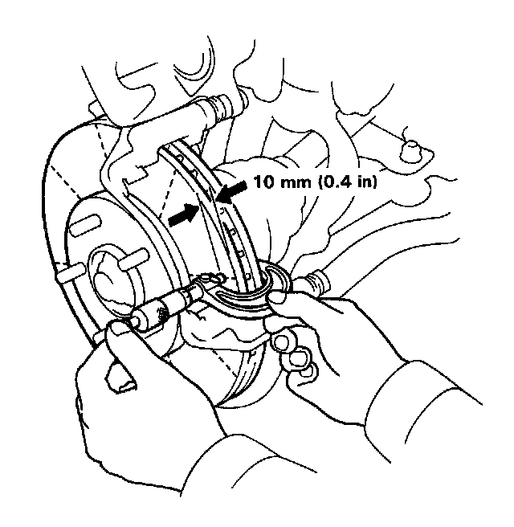

Front
Thickness and Parallelism Inspection1. Support the front of the car on safety stands and remove the front wheels.
2. Remove the front brake pads. Service and Repair

3. Using a micrometer, measure disc thickness at eight points, approximately 45° apart and 10 mm (0.4 in) in from the outer edge of the disc.
Brake disc thickness:
Standard: 23.0 mm (0.91 in)
Brake Disc Parallelism: 0.015 mm (0.0006 in) max.
NOTE: This is the maximum allowable difference between any thickness measurements.
4. If the disc is beyond the limits for parallelism, refinish the disc with an on-car brake lathe. Be sure to install washers and nuts to hold disc securely to hub. Torque to 110 Nm (11 kg-m, 80 lb-ft). The KwikLathe produced by Kwik-Way Manufacturing Co. and the "Front Wheel Drive Disc Brake Lathe" offered by Snap-on Tools Co. are approved for this operation.
Max. Refinishing Limit: 21.0 mm (0.83 in)